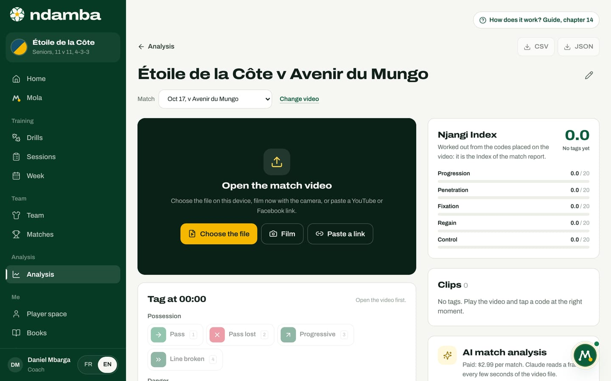
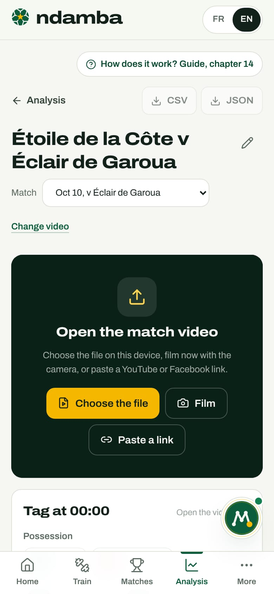
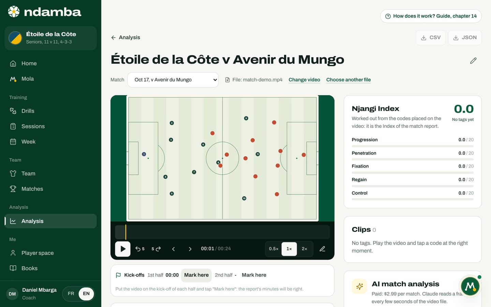
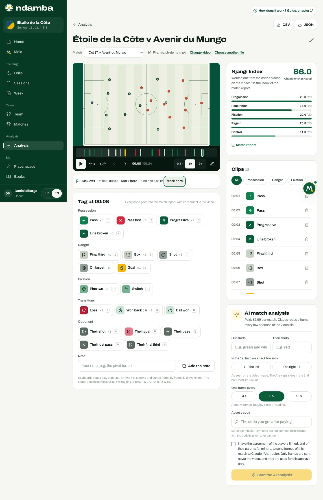
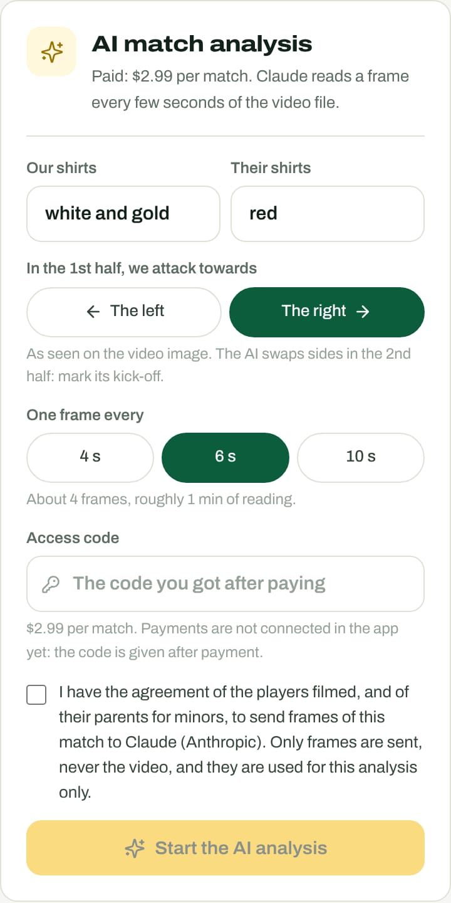
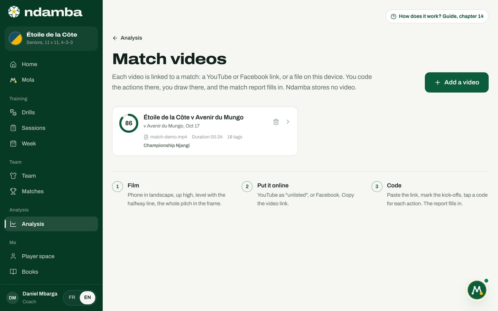

The video studio, the AI analysis and the season
The studio where you code a match on its video (YouTube or Facebook link, file or the phone camera), the kick-offs, slow motion, clips, drawing and exports; the paid AI analysis, what it reads and what it does not do; then the Analysis page, which follows the Njangi Index across the whole season.
13 min read
A match tells a story; a season tells a method. In between, there is the video. It is on the video that you code the match (chapter 12), on the video that you show the players what the numbers say, and on the video that the AI analysis reads the team’s shape. This chapter opens the video studio, explains the AI analysis without dressing it up, then goes back up to the Analysis page, where a technical director sees whether the week’s work shows up on Saturday.
Open the studio
The studio opens in three ways: from the Add a match video window (chapter 12), with Code the video on a match row in Analysis, or from the Match videos page. Each video has its own address: you can bookmark it.
At the top: the Analysis link to go back, the CSV and JSON buttons (active from the first code), the title with a pencil (Rename the project), the linked Match, which you can change at any time, where the video comes from (YouTube video, Facebook video or File: match.mp4) and the Change video link.
With a link, the official YouTube or Facebook player shows in the studio, and the video is ready. If it cannot play, the studio says so, "This video cannot play here.", and reminds you why: a private video does not show; it must be unlisted or public on YouTube, public on Facebook, and embedding must be allowed.
With a file, the large dark area says Open the match video and offers three buttons:
- Choose the file: the video saved on the device (on a computer you can also drag it onto the area);
- Film: opens the phone camera; the filmed video opens in the studio straight away;
- Paste a link: switch to a YouTube or Facebook video.


The file is never sent over the internet, and Ndamba does not keep it: on each visit the area asks you to "Choose the video "match.mp4" again", and your codes fall back into place at the right moment. If the file you choose has another name, a banner warns that the codes will be placed on this video. Choose another file lets you pick a different one.


Mark the kick-offs
Below the video, the Kick-offs strip carries two markers: 1st half and 2nd half. Put the video on the first-half kick-off and tap Mark here; do the same at the second-half kick-off. The studio says why: "Put the video on the kick-off of each half and tap "Mark here": the report’s minutes will be right."
Without markers, Ndamba assumes the video starts at kick-off. With both markers, a code placed at 61 minutes of video, in a second half that started at 55 minutes, becomes the 52nd minute of a 2 x 45 match. If you mark a kick-off after coding, every minute is worked out again. The second-half marker also serves the AI analysis, which then swaps the direction of attack.
Play, slow down, step frame by frame


Below the picture: Play and Pause; Back 5 s and Forward 5 s; Previous frame and Next frame (one twenty-fifth of a second); the time; the speeds 0.5x, 1x and 2x; the Draw pencil. Above them, the timeline carries a coloured mark for each code and the golden playhead: tap it to jump to a moment.
Not everything works everywhere, because the YouTube and Facebook players have their limits:
| File | YouTube | ||
|---|---|---|---|
| Play, pause, 5 s skips | yes | yes | yes |
| Speeds 0.5x and 2x | yes | yes | no |
| Frame by frame | yes | no | no |
| Drawing on the picture | yes | no | no |
| AI analysis | yes | with the file | with the file |
On a computer, the keyboard is enough: "Space play or pause, arrows 5 s, comma and period frame by frame, D draw, N note. The codes use the same keys as live tagging (1 to 9, F S L K R A B, Q W E)." On a phone, the player stays pinned at the top while you scroll down to the codes.
Code at the right moment
The codes card is titled with the video time, Tag at 00:08, and reminds you: "Every code goes into the match report, with its moment in the video." These are the buttons of chapter 12, in five groups plus the opponent, each with its key and its counter ("×5"). A message confirms each code, for example "Pass, 00:12".
The rules are those of the Njangi Code: a Goal adds Shot and On target; a Ball won within 5 seconds of video after a Loss or a Pass lost becomes a Won back 5 s. Below the codes, the Note field takes a free sentence ("the pivot turns") with Add the note. Notes stay in the studio; they do not go into the report.
The good method: let it play, tap the code at the moment of the action; if the action is unclear, pause, go back 5 seconds, switch to 0.5x. Code a whole half first with the basic buttons, then go over it again for fixation and the opponent.


On the right, the Njangi Index card: "Worked out from the codes placed on the video: it is the Index of the match report." It updates with every code, with the Match report link. In the screenshot, the Index is 86.0 after about twenty codes over 24 seconds of demo: it means nothing. An Index only makes sense over a whole match.
Clips
The Clips card lists every code in video order: the time, the code icon, its name, the codes added automatically ("+ Shot, On target"), the note, the thumbnail of the annotated image, and the Delete this tag bin. Tap a clip: the video restarts 4 seconds before, so you see the action build up. Chips filter by group: All, Possession, Danger, Fixation, Transitions, Opponent, Note.
A clip is a marked moment, not a cut file. For the video session with the players, you replay the clips from this list. Five well-chosen clips are worth more than a whole match.
Draw on the picture
Drawing works on a file (the YouTube and Facebook players do not let their picture be captured).
- Tap the Draw pencil (or D). The video pauses.
- Choose Arrow, Circle or Freehand, and the colour, Gold, White or Red.
- Draw with a finger or the mouse. Undo stroke, Redo the stroke and Clear correct it.
- Save the image merges the picture and the drawing into a thumbnail, attached to the selected code or to a new note at that moment: "Image saved on the tag at 00:12".
Tap the thumbnail to enlarge it: Download the image saves it as a JPEG, Remove the image detaches it, Go to the clip replays the moment.
Change video, change match, export
Change video replaces the link (or switches from a file to a link) without touching the codes. The Match menu changes the linked match: the codes follow, and the old match’s report empties. A match already linked to another video is greyed out.
The buttons at the top download the work to the device, sending nothing: CSV, one row per code, for a spreadsheet; JSON, the full project, the Index, the codes, the images and the AI analysis result if there is one. That is the format to keep or to pass on to an analyst.
The AI match analysis
Below the clips, the AI match analysis card is upfront: "Paid: $2.99 per match. Claude reads a frame every few seconds of the video file."


What it reads. Claude, Anthropic’s AI, does not watch the video continuously. The browser takes a frame from the file every 4, 6 or 10 seconds, shrinks it to 960 pixels wide, and sends the frames in batches of twelve. For each frame, Claude says who has the ball (us, them, contested, dead ball, or unreadable), which third it is in, the height of our block when the opponent has the ball, and how many of our players are behind the ball when we have it. A blurred or badly framed frame is declared unreadable rather than guessed.
What it gives back. Once the frames are read:
- Possession (estimate), on the frames where someone has the ball;
- Where the ball was: the share of time in Our third, the Middle and Their third;
- the height of Our block without the ball: high, mid, low;
- the average number of Players behind the ball, and the share of frames where the Rest defence 3 + 2 holds (at least five players behind the ball when we attack);
- the Moments to watch again, about twenty at most, for example "Only 2 players behind the ball": tap one and the video restarts just before;
- a short written summary, in the app’s language.
What it does not do. It does not count passes, losses or shots: frames every 6 seconds do not see every action. It does not recognise players. It does not touch the Njangi Index, which always comes from the coding. The card says so under the results: "Estimates made on frames, not a count of every action: check them on the video."
Why a file and not the link? YouTube and Facebook do not allow downloading their videos, and their players do not let their picture be copied. So the AI reads the file, opened on the device: the phone’s original recording, or the one you get back from YouTube Studio. For a link video, the card offers Open the match file; the opened file serves the AI, while playback carries on through the link.
The settings.
- Our shirts and Their shirts: simple colours, "white and gold", "red". That is how Claude tells the teams apart.
- In the 1st half, we attack towards: The left or The right, as seen on the video image. Mark the second-half kick-off: the AI swaps the direction from there.
- One frame every 4 s, 6 s or 10 s. Six seconds is the right balance; the card estimates the number of frames and the reading time, for example "About 900 frames, roughly 26 min of reading."
- Access code: "The code you got after paying". Payments are not connected in the app yet: the code is given after payment.
- The agreement box: "I have the agreement of the players filmed, and of their parents for minors, to send frames of this match to Claude (Anthropic). Only frames are sent, never the video, and they are used for this analysis only." Without it, nothing is sent.
Start the AI analysis begins the reading. A bar shows progress; "Keep this page open. What has been read is saved: you can resume." Stop interrupts it; Resume the analysis picks up where it stopped, without reading the frames already read again. If the network drops, nothing is lost. Run the analysis again starts over with other settings.
What it costs. A 960 x 540 frame represents about 700 tokens for Claude. At one frame every 6 seconds, a 90-minute match makes about 900 frames, roughly 630,000 input tokens: around $2.5 at the public Opus 5.5 rate ($4 per million input tokens), plus the answer. The price of $2.99 per match is a proposal that covers that cost; it remains to be confirmed.
Match videos


From Analysis, All videos opens Match videos: "Each video is linked to a match: a YouTube or Facebook link, or a file on this device. You code the actions there, you draw there, and the match report fills in. Ndamba stores no video." Each card shows the Index dial, the title, the match, the source, the duration, the codes and the AI chip if the analysis has run. The whole card opens the studio. Delete the project asks for confirmation, "Delete this project and its tags?"; the video itself, on YouTube, Facebook or the device, is not touched. The Add a video button opens the window of chapter 12.
The Analysis page: the season at a glance
In the menu, under Analysis, tap Analysis; on a phone, it is the Analysis tab of the bottom bar. The subtitle says it all: "Analysing a match means coding every action on its video: pass, loss, regain, shot. Ndamba turns that into the Njangi Index, the match report and the season." Then comes the How the analysis works panel (chapter 12).

Matches to analyse
The upcoming matches. The first takes a dark card, Next match, with the Add the video and Live, without video buttons, and this advice: "Best: film the match, put the video on YouTube or Facebook, then code it here at your own pace. Without a video, code live from the touchline." The next ones come as rows, with the same buttons. A planned match whose date has gone by carries the Date passed chip. The New match link creates one (chapter 11).
On the Free and Player Premium plans, one match can be analysed. Beyond that, the card says "Unlimited analysis is in Coach Pro" and the button becomes See plans. Payments are not connected yet: activating a plan is a demonstration (chapter 24).
Analysed matches
Every coded match, newest first: a dial with the rounded Index, the opponent, the date, the band (Solid Njangi), the number of codes, the on video or live label, the score and the Win, Draw or Loss chip. Tap a row to open the report (chapter 13). Played matches with no code follow, each with Add the video: a match can be coded afterwards, the next day or the next week.
The Index match after match
The The Index match after match card draws the season curve. With a single analysed match, it shows its dial and warns: "The curve appears from the second analysed match." From two onwards, a line from 0 to 100, with the 35, 50, 65 and 80 thresholds as guides, one point per match; tap a point to open its report.
The season, sub-index by sub-index
The season, sub-index by sub-index gives the season Index in large type (67.9 in the pro club demo, Solid Njangi) and the five bars. The method’s rule is recalled: the codes are added up, then the Index is calculated, never the average of the matches. A fully coded match therefore weighs more than a half-coded one, which is fair: it contains more observed play.
The Index in two sentences, and the videos
The Njangi Index, in two sentences recalls the starting idea, "Possession percentage lies: a team can have the ball and never go anywhere.", with the Read The Njangi Code, chapter 32 link. The Match videos card gives the number of videos, Add a video and All videos.
If no team exists yet, the page first asks you to Create your team first: a Team name, an Age group, a Format, then Create the team.